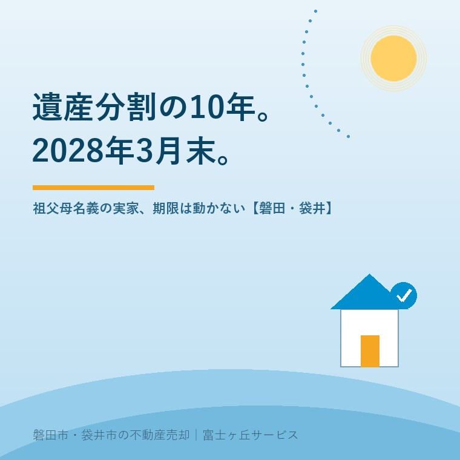

2026年8月24日｜カテゴリ：相続・名義／実家じまい

この記事の要点
Q. 祖父名義のままの実家です。誰も困っていないのに、期限があると聞いて驚きました。
A. 民法904条の3で、相続開始から10年を過ぎた遺産分割は法定相続分によることになりました。昭和や平成に始まった相続でも、令和10年（2028年）3月31日が実務上の区切りです。分割はできますが、特別受益と寄与分は主張できなくなります。
磐田市・袋井市では、介護施設の運営から不動産事業を始めた富士ヶ丘サービスのような地域密着の会社に相談するという選択肢があります。
「うちは祖父の名義のままです。父も亡くなりました。でも兄弟仲は悪くないので、そのうちに」。磐田市や袋井市で古い家の相談を受けると、この話し方をよく聞きます。仲がいいなら急がなくていい、というのは自然な感覚です。ところが2026年8月24日の時点で、その家には残り約1年7か月の期限がついています。
この記事は、e-Gov法令検索の条文、法務省、裁判所、磐田市が公表している内容を2026年8月24日に確認して書いています。祖父名義の実家に相続人が10人いる場合の全体像は祖父名義のままの実家に、相続人が10人に、相続登記の期限は相続登記の期限はいつまで？に書きました。ここでは10年ルールだけを、条文と、実際にかかる費用と段取りまで下ろします。
民法904条の3（期間経過後の遺産の分割における相続分）は、こう定めています。「前三条の規定は、相続開始の時から十年を経過した後にする遺産の分割については、適用しない。」前三条とは、特別受益の持戻し（903条・904条）と寄与分（904条の2）です。令和5年（2023年）4月1日に施行されました。
ここを誤解している方がとても目立ちます。10年を過ぎても、遺産分割そのものはできます。法務省の資料「具体的相続分による遺産分割の時的限界」は、10年経過後も分割方法は基本的に遺産分割であって共有物分割ではないこと、裁判手続は家庭裁判所の管轄であること、遺産全体の一括分割ができること、配偶者居住権の設定も可能であることを明記しています。
変わるのは分割の基準です。特別受益と寄与分を織り込んだ具体的相続分ではなく、法定相続分（または遺言による指定相続分）で分けることになります。つまり「長男が20年、祖父の畑と家を守ってきた」も、「二男は生前に建築資金を出してもらった」も、家庭裁判所では計算に入らなくなる。消えるのは分割の権利ではなく、主張して認めさせる力です。
この改正でいちばん意外なのは、古い相続ほど期限が近いという点です。民法等の一部を改正する法律（令和3年法律第24号）附則第3条は、新民法904条の3を「施行日前に相続が開始した遺産の分割についても、適用する」と定め、そのうえで読み替えを置いています。
附則第3条の読み替え：「相続開始の時から十年を経過する前」とあるのは「相続開始の時から十年を経過する時又は民法等の一部を改正する法律（令和三年法律第二十四号）の施行の時から五年を経過する時のいずれか遅い時まで」とする（e-Gov法令検索・民法 附則）。
施行は令和5年4月1日ですから、施行の時から5年を経過するのは令和10年4月1日です。したがって実務上は令和10年（2028年）3月31日までに家庭裁判所へ遺産分割を請求すれば、具体的相続分での分割を求められると押さえておけば間違えません。相続が昭和55年に始まっていても、平成10年に始まっていても、この日付は同じです。
| 相続が始まった時期 | 10年を経過する時 | 実務上の区切り |
|---|---|---|
| 昭和55年 | 平成2年（すでに経過） | 令和10年3月31日 |
| 平成20年 | 平成30年（すでに経過） | 令和10年3月31日 |
| 令和2年 | 令和12年 | 令和12年（10年の側が遅い） |
民法904条の3および民法等の一部を改正する法律（令和3年法律第24号）附則第3条により作成。2026年8月24日確認。日付の数え方は事案により異なるため、弁護士へご確認ください。
条文が求めているのは「家庭裁判所に遺産の分割の請求をした」という状態です。話し合いを始めた、司法書士に相談した、では足りません。実際には遺産分割の調停または審判を申し立てることになります。ここから先は、費用と手順の話をします。
裁判所の「遺産分割調停」のページによると、申立人は共同相続人・包括受遺者・相続分譲受人。申立先は相手方のうちの一人の住所地の家庭裁判所、または当事者が合意で定める家庭裁判所です。費用は被相続人1人につき収入印紙1,200円分と、連絡用の郵便料（額は裁判所ごとに異なります）。
磐田市・袋井市はどこへ行くのか。裁判所の「静岡県内の管轄区域表」によると、浜松市・磐田市・袋井市・湖西市を管轄するのは静岡地方裁判所・家庭裁判所浜松支部です。磐田市内に家庭裁判所の窓口はありません。きょうだいが磐田市と袋井市に住んでいるなら、浜松支部が現実の窓口になります。
そして数次相続では印紙の枚数が増えます。収入印紙は被相続人1人につき1,200円ですから、祖父と父の二代分をまとめて扱うなら、その分の申立てが要ります。祖父名義のままの実家で相続人が広がる仕組みは共有名義の実家にも書きました。
申立てに要る書類の中心は戸籍です。被相続人の出生時から死亡時までの戸籍謄本、相続人全員の戸籍謄本、住民票または戸籍の附票、不動産登記事項証明書、固定資産評価証明書。祖父母の代までさかのぼると、除籍謄本と改製原戸籍謄本が何通も要ります。
磐田市の手数料は、戸籍全部事項証明書が1通450円、除籍謄本と改製原戸籍謄本が1通750円です（磐田市「戸籍謄本・抄本」2025年3月25日更新）。仮に除籍と改製原戸籍が合わせて20通なら1万5,000円。収入印紙1,200円より、戸籍の実費のほうがはるかに大きい。相続人が10人いれば、その全員分の戸籍と住民票も足されます。
落とし穴の1つ目は窓口です。令和6年3月1日から始まった広域交付で、本籍地以外の市区町村でも戸籍証明書が取れるようになりました。ただし磐田市の案内（2025年2月17日更新）によると、広域交付を請求できるのは磐田市役所（本庁）市民課だけで、各支所の窓口では請求できません。受付は平日午前8時30分から午後5時15分まで。本人確認は写真付きの官公庁発行の身分証明書が必要で、健康保険証や年金手帳では対応できないとされています。
落とし穴の2つ目のほうが、相続では致命的です。広域交付で請求できるのは、本人・配偶者・直系尊属・直系卑属の戸籍に限られ、兄弟姉妹の戸籍は請求できません。祖父の代の相続では、大叔父や大叔母、その子どもという傍系の戸籍が必ず出てきます。そこは広域交付では取れず、本籍地の市区町村へ郵送で請求することになります。1通あたりの往復に日数がかかり、これが数次相続の準備でいちばん時間を食うところです。
法務省の資料をもとに、経過後の状態を整理します。ここを取り違えると、必要のない焦りか、逆に危険な楽観のどちらかに振れます。
| 10年経過後の扱い | |
|---|---|
| 遺産分割そのもの | できる（共有物分割ではなく遺産分割のまま） |
| 裁判手続の管轄 | 家庭裁判所のまま |
| 遺産全体の一括分割 | できる |
| 配偶者居住権の設定 | できる |
| 特別受益の持戻し（903条・904条） | 主張できない |
| 寄与分（904条の2） | 主張できない |
| 分割の基準 | 法定相続分または指定相続分 |
| 相続人全員が合意した場合 | 具体的相続分による分割も可能 |
法務省「具体的相続分による遺産分割の時的限界」および民法904条の3により作成。2026年8月24日確認。
最後の行が効きます。法務省の資料は、10年が経過して法定相続分による分割を求めることができるにもかかわらず、相続人全員が具体的相続分による遺産分割をすることに合意したケースでは、具体的相続分による遺産分割が可能だと示しています。全員が納得しているなら、期限が過ぎても実害は出ません。効いてくるのは、一人でも反対したときです。
制度への評価を、良い点から書きます。私は宅地建物取引士として、この10年ルールには合理性があると考えています。
注文も2つ書きます。批判ではなく、現場で困っている人がいるという一事業者からの報告です。
1つ目。「10年」という言葉が独り歩きしています。相談の場で私が聞くのは「10年たつと分けられなくなるんですよね」という言い方です。実際に消えるのは特別受益と寄与分の主張であって、分割そのものではありません。逆に「分けられるなら平気だ」と受け取る方もいます。どちらの誤解も、同じ言葉の足りなさから出ています。
2つ目。期限を守るための行き先が家庭裁判所だけ、というのが重い。市役所でも法務局でもなく、磐田市の方なら浜松支部です。話し合いで解決したい家族に対して、期限を止める唯一の方法が申立てというのは、心理的な段差が大きすぎると私は思います。もっとも、期限の到来を客観的に確定させるには裁判所への請求という形が要る、というのも分かる。代わりの仕組みを私も思いつけずにいます。
ここから先は、私が立ち会った特定の案件の話ではなく、宅地建物取引士としての意見です。体験談として書ける材料が手元にないので、そのつもりで読んでください。
私が怖いのは、期限を過ぎたあとに実家が法定相続分どおりの共有になることではありません。怖いのは、そのときに「じゃあ売って分けよう」となる場面です。10年ルールは分け方の基準を変えるだけですが、分数で切られた家に住み続けている人がいると、話は必ずそこへ向かいます。祖父の家を守ってきた人ほど、寄与分を失った状態で、住んでいる家を売る側に回される。
だからこの記事は「今すぐ申し立てましょう」で終わらせません。まず、きょうだいの誰が反対しうるかを見てください。全員が同じ絵を描けているなら、期限を過ぎても合意で分けられます。一人でも読めない人がいるなら、そのときは令和10年3月31日という日付が効いてきます。判断の材料はそこにあります。
磐田市の人口は令和8年7月末現在で16万3,224人、世帯数は7万2,421世帯です（磐田市公表・2026年8月17日更新）。世帯が入れ替われば、名義の動かない家がそのぶん出ます。私が現地と資料を見ていて、この期限が効きそうだと感じる形を挙げます。
売却まで進むなら、値が付きにくい土地に効く控除の話も絡みます。そちらは低未利用土地100万円控除──空き家3000万円控除との選び方に整理しました。
売ると決めていなくても、期限までに価値が減らない確認を3つ挙げます。
今日、申し立てるかどうかを決める必要はありません。名義人と、亡くなった日と、相続人の人数。この3つが紙に書けているだけで、弁護士や司法書士に相談したときの進み方が変わります。ただし、この期限だけはこちらの都合で動きません。
当社は磐田市見付で介護施設を運営するところから不動産の仕事を始めました。ご相談の入口は、たいてい「親が施設に入った」「親を看取った」です。名義が祖父のままという家も、珍しくありません。
価格のご相談を受けても、査定額を先に出しません。先に見るのは、道路と境界と名義、そして今回のような日付です。遺産分割も相続登記も当社の業務ではなく、弁護士・司法書士の仕事ですが、その方々に持ち込む前の材料をそろえるところはお手伝いできます。目指しているのは「高く売る」だけではなく、「家族が困らない売却」です。事実を整理する道具としてふじがおか実家カルテを用意しています。
仲がいいから大丈夫、は半分だけ正しい。全員が同じ絵を描けているうちは、期限は効きません。描けなくなった日から効き始めます。遺産分割と相続登記の個別の判断は、弁護士または司法書士へご確認ください。
ふじがおか実家カルテ｜弁護士・司法書士に相談する前の材料を1枚に
名義と相続人が見えれば、期限の話が具体になります。
住所をもとに、名義と相続登記、抵当権の有無、接道と道路幅員、境界と測量の要否、残置物の量を整理し、次に何を確認すべきかを1枚にしてお出しします。作成料0円・入力約1分。申込みだけで売却依頼にはなりません。
できなくなりません。10年を過ぎても分割方法は遺産分割のままで、家庭裁判所の管轄、遺産全体の一括分割、配偶者居住権の設定も可能です（法務省「具体的相続分による遺産分割の時的限界」）。変わるのは分割の基準で、特別受益と寄与分を考えた具体的相続分ではなく、法定相続分または指定相続分になります。失われるのは主張して認めさせる力です。
民法等の一部を改正する法律（令和3年法律第24号）附則第3条により、施行日前に開始した相続は「相続開始の時から十年を経過する時」か「施行の時から五年を経過する時」のいずれか遅い時までとされています。施行は令和5年4月1日なので、5年を経過するのは令和10年4月1日。実務上は令和10年（2028年）3月31日までが区切りです。日付の数え方は事案により異なるため弁護士へご確認ください。
分けられます。法務省の資料は、10年が経過して法定相続分による分割を求められる状況でも、相続人全員が具体的相続分による遺産分割をすることに合意したケースでは、具体的相続分による遺産分割が可能だと示しています。効いてくるのは一人でも反対したときで、そのときは家庭裁判所が法定相続分で分けます。

この記事を書いた人：大石浩之（宅地建物取引士）
磐田市・袋井市で「介護×相続×空き家」に特化した不動産売却支援を行う富士ヶ丘サービスの代表取締役・宅地建物取引士。介護施設の運営から不動産事業を始めた経験をもとに、売主とご家族が困らない売却を一件ずつお手伝いしています。プロフィール
本記事は2026年8月24日時点で、e-Gov法令検索・法務省・裁判所・磐田市が公表している情報に基づく一般的な整理であり、個別の法律判断を行うものではありません。期限の数え方、申立ての要否、分割の内容は事案により異なります。遺産分割は弁護士へ、相続登記は司法書士へ、税務は税理士へ、境界の確定は土地家屋調査士へご確認ください。個別のご相談は当社までどうぞ。
磐田市・袋井市の実家じまい・相続空き家相談
固定資産税通知書だけでも相談できます
住所があいまいでも、通知書や写真から名義・道路・農地・残置物の確認順を整理します。カルテ申込またはLINEで状況を送ってください。
富士ヶ丘サービス株式会社／静岡県磐田市見付5789番地1／TEL:0538-31-3308／静岡県知事 (2) 第14083号／代表取締役・宅地建物取引士 大石 浩之